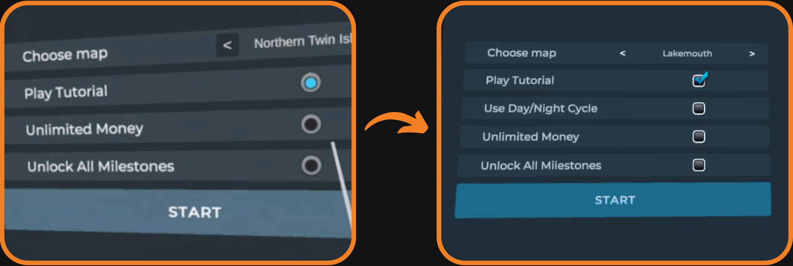
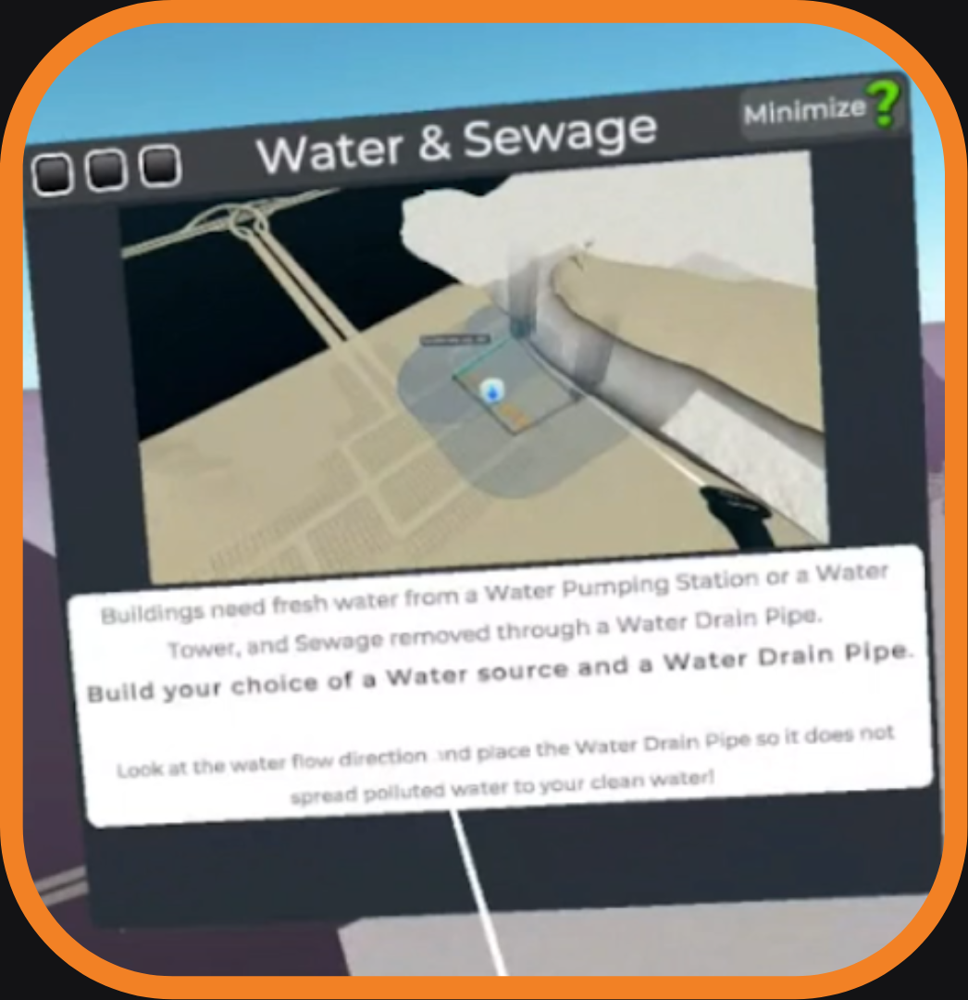
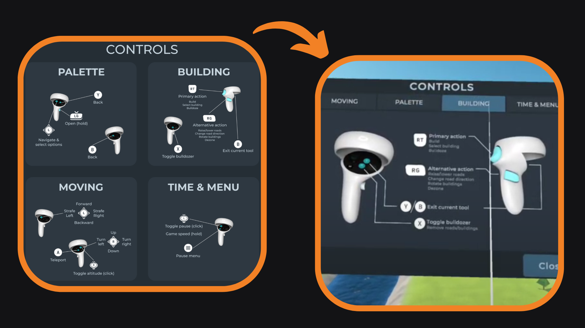
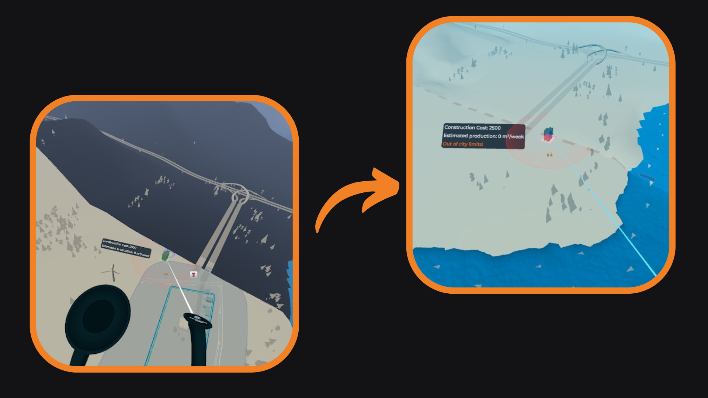
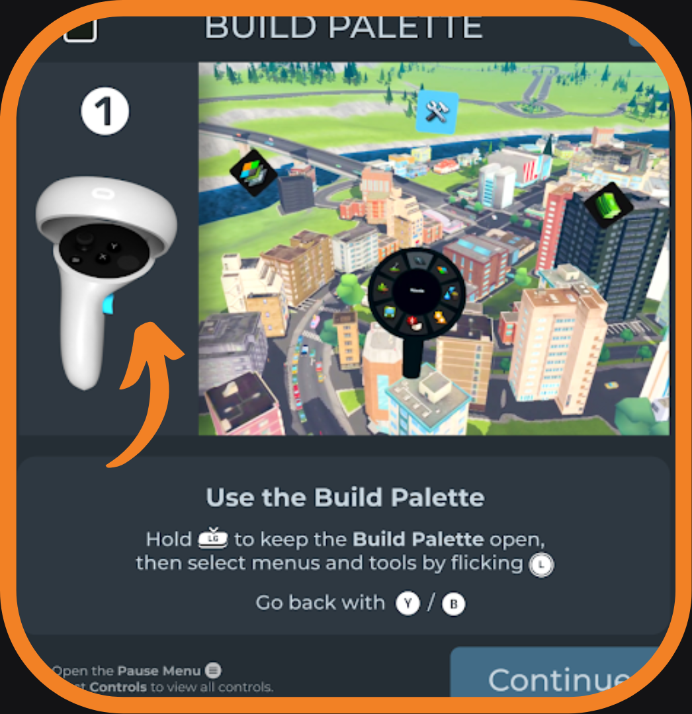
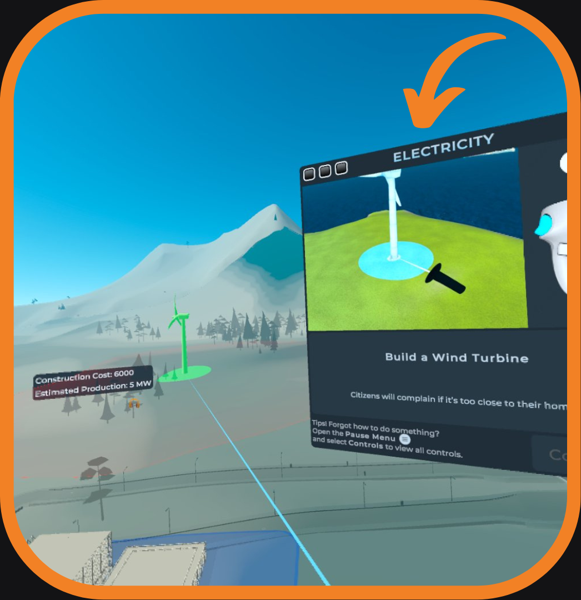
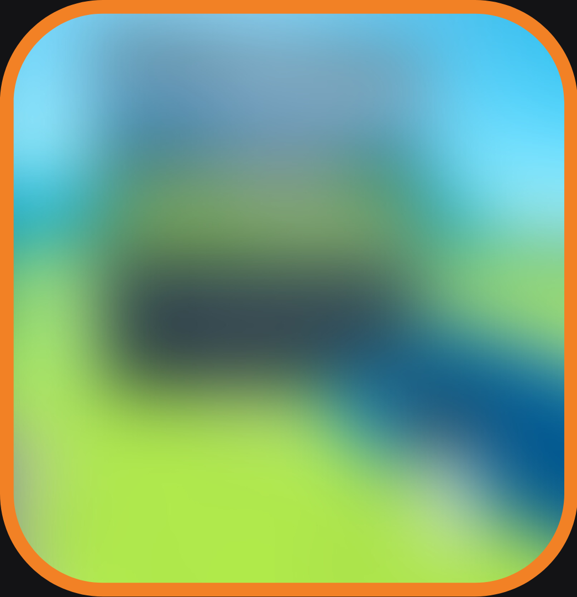

As the UX Designer for Cities: VR, a live VR port of the city-building game Cities: Skylines, I have focused on improving the tutorial and onboarding experience through prototyping, testing, and design discussions with the team.
Upon joining the project, I identified and addressed various issues including overwhelming instructions, long tutorial duration, multiple prompts at once, difficulty remembering controls, and an intrusive screen that followed the player's face.
Upon joining the project, I focused on improving the onboarding and tutorial to better fit the target audience, some of whom were not familiar with the Cities: Skylines franchise.
Through initial review and user testing, I identified various issues including:
Overwhelming instructions
Long tutorial duration
Multiple prompts at once
Difficulty remembering controls
Intrusive UI screens that followed the player's face
Missed vibrations & indications
Lack of understanding of basic game mechanics
These issues resulted in a significant percentage (40%) of players being unable to complete the tutorial.

Since you can select several options, it should be checkboxes to indicate that.

A screen from the initial tutorial

Controller cheat sheet

Players thought the city limit looked like water

New instructions and GIFs with highlighted buttons
PROTOTYPING, TESTING & ITERATING
To improve the player experience I focused on prototyping and testing new tutorial instructions and a controller cheat sheet, as well as identifying quick fixes such as changing the city border color and allowing players to receive a full refund during the tutorial.
In addition, we implemented stationary screens which were found to be more effective in helping players understand and retain information, as well as a Player Guide to provide players with ongoing support and information throughout the game.
While the tutorial is now quicker and all players were able to complete it, players still struggled with remembering controls and button placements. Further updates and solutions will be implemented in the future to continue improving the player experience.
KEY TAKEAWAYS
Important to provide visualizations of game controls
Always including a controller cheat sheet in the pause menu
Provide additional support and guidance to players through in-game guides
Avoid overwhelming players with multiple notifications or events at once
Players tend to read less in VR
Players may ignore on-screen prompts if they obstruct the view
Players may need time to adapt to the VR environment
Hello! This is Chirper. Here to make players happy!
I joined Fast Travel Games as their first UX Designer after the skeleton of the tutorial had been created.
I quickly noticed that it needed some love to fit the target audiences since not all would be familiar with the Cities: Skylines franchise.
Initial review
I found some low-hanging fruit that would help players.
For example, switching from radio buttons to checkboxes when players can check several options.
Initial test
To validate the need for an update, and identify the main pain points, I ran an initial tutorial test on Cities: VR.
40% of the players couldn't even finish the tutorial! Other insights included:
Too overwhelming
Long instructions
Several prompts at the same time
Forget controls & buttons
Intrusive screen which follows the face
Missed vibrations & indications
Ran out of money
Teleport didn't work as they thought
Players felt stupid
Since you can select several options, it should be checkboxes to indicate that.
A screen from the initial tutorial
Iterating on instructions
Controller cheat sheet
Players thought the city limit looked like water
2. PROTOTYPING & QUICK FIXES
While some fixes could only be tested after a rough implementation, I could test and iterate on the instructions.
Instructions
I created and iterated on the tutorial texts in Figma, testing each iteration on the target audience through 1-on-1 interviews online.
Controller Cheat Sheet
Cities: VR is a very complex game, and not everything is being taught at the tutorial.
Since players also got overwhelmed by the amount of information and controls, I suggested we add a controller cheat sheet to the game.
While testing the instructions, I also tested my wireframe of the controls.
Quick fixes
I had identified some issues which could be easily fixed by the developers. Some examples are:
The city border looks like water while the player is in the water-view.
Just by changing the color, no players thought it was water in future tests.
Players could run out of money and get stuck in the tutorial.
We changed the bulldozing so players could get a full refund during the tutorial.
3. MORE VR TESTING
1: New instructions & button GIFs
The tested, new instructions were in! The test was much quicker, no players got stuck, and they were generally less confused.
We also added GIFS with pictures of the controllers, highlighting the relevant buttons.
While this was a cost-effective and fast way to show button locations, it was ultimately not enough.
Players didn't remember controls & buttons
GIFs moved too fast
The intrusive screen still annoyed players
2: Stationary screens
During the past two tests, I noticed players trying to look past the instruction screens. It seems like it was interfering with the learning.
We fixed the screens and implemented a Player Guide which would support players with information later in the game.
The result of the stationary screens was better than expected!
Players noticed indications and vibrations
Tutorial was quicker
Players read the instructions more
Tutorial felt short
But, players still had issues with knowing button placement and remembering controls.
When playing VR games it's a hassle to look at the controls, since you need to remove the headset to do so.
Players also forgot which buttons had which action, since they focused on trying to remember button placements.
3: ?
The latest tested update is not yet released. I look forward to sharing our solutions!
1: New instructions and GIFs with highlighted buttons

2: A less intrusive screen which you can look away from

3: Not yet released update
We got nominated for the VR Awards!
4. UPDATES
Since Cities: VR is a live game, I will continue to work with the designers to create great solutions, and test the game continuously.
I can only share findings and solutions that have been released in updates, so I will continue to update this page.
5. KEY TAKEAWAYS
Working with VR games is exciting since there are so many new challenges to tackle!
It's still a fairly new medium, and there are few guidelines on how to solve common usability issues.
My top takeaways from Cities: VR so far is:
Players read even less in VR
If a screen is in the way, players will ignore it
Players need a visualization of the controllers and their buttons
Always add a controller cheat sheet to the pause menu
Extra guides are needed since it's hard to google solutions
Players need time to adapt to the environment
Multiple events/notifications simultaneously are overwhelming
Hello! This is Chirper. Here to make players happy!